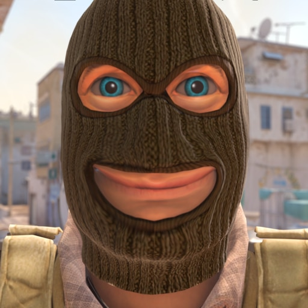

Gameplay changes compared to Counter Strike: Global Offensive Counter Strike 2 has introduced many changes compared to its predecessor. Graphics The game is powered by the Source 2 engine , which has resulted in updated graphics. All maps, the main menu, and the inventory interface have been refreshed. Realistic blood stains and splatter caused by enemy hits have been added, directed in the direction of impact [ 3 ] . The bomb explosion effect has also been improved, with a larger radius and greater impact on some maps [ 6 ] [ 7 ] . Animations have been introduced for the player-controlled character's legs moving while walking [ 8 ] [ 9 ] . Classification and Ranking System In the tournament mode, the ranking system (from "Silver I" to "World Elite") is retained, but a new feature is the introduction of a separate rank for each map [ 10 ] . A new classification system has been added for Premier mode, where a player's position is symbolized by a color (from gray to gold) and an assigned number ranging from 0 to 35,000 [ 11 ] [ 12 ] . Changed grenade rules The smoke produced by grenades has gained new properties – it can be dispersed by the explosion of an offensive grenade or by passing projectiles [ 3 ] . A new feature is the addition of a slight tint in the color of the team to which the player threw the smoke grenade (smoke produced by a member of the counter-terrorist team is tinted gray-blue, while smoke from the terrorist team is sandy yellow) [ 13 ] . Molotov cocktails have also been changed in the game, in addition to receiving new animations, they now produce quieter burning sounds when used [ 14 ] . Off-Tick Updates Tickrate is the number of data packets downloaded from the server per second [ 15 ] [ 16 ] . Thanks to the off-tick update system, the game can receive information from the server outside of individual ticks (the moment of downloading packets), which improves its performance [ 3 ] [ 17 ] and positively affects gameplay elements, such as movement or throwing grenades [ 16 ] . Removing skyboxes In Counter-Strike 2, skyboxes were removed , allowing grenades to be thrown more effectively (in Counter-Strike: Global Offensive, some grenade trajectories were blocked by the skybox) [ 18 ] [ 13 ] . Items unavailable in Counter-Strike 2 compared to previous versions of the game Danger zone mode [ 19 ] ; The premiere version did not include some maps [ 20 ] [ 21 ] ; In the initial version of the game, the ability to hold a weapon with the left hand was unavailable [ 20 ] , but the update from April 26, 2024 restored this ability [ 22 ] . History Several years before the game's release, speculation began among the community about porting Counter Strike: Global Offensive to the Source 2 engine. [ 23 ] [ 24 ] [ 25 ] The game was announced and made available to a limited group of users for testing on March 22 , 2023. [ 26 ] Calendar of changes in selected test versions of the game On March 22, 2023, the first beta version of Counter-Strike 2 was released . Players received a refreshed version of the Dust 2 map and two game modes for testing: deathmatch and tournament [ 26 ] . On June 6th, the weapon purchase menu was refreshed. The circular inventory was abandoned in favor of a new one, dividing weapons into categories and providing a "slotted" inventory. In the main menu, the player can select weapons available in the inventory. Slots have been divided into three new categories. The player can choose one starting pistol (received for free at the start of the round), four pistols, five "medium weapons" (shotguns and submachine guns), and five "heavy weapons" (machine guns, M249, Negev) [ 27 ] . This configuration allows the selection of both weapons (e.g., M4A1S and M4A4), from which previously only one slot was available [ 28 ] . This update replaces the Dust 2 map with the Mirage map, and provides tools for creating new weapon skins and decals [ 27 ] . On June 29th, the grenade inspection feature was introduced. A new game mode was also introduced – Simplified, and the maps were replaced with two new ones – Office and Nuke [ 29 ] [ 30 ] . On July 17, the Office and Nuke maps were removed. They were replaced with the remastered Overpass and Vertigo maps. This version also introduced the Wingman game mode . [ 31 ] August 2nd – Previous maps were replaced with Anubis and Ancient. The Wingman game mode was also removed and the Chicken Swimming feature was introduced [ 32 ] . On August 15th, the tournament mode was removed and the private match feature was disabled. The Anubis and Ancient maps were replaced with a remastered version of the Italy map. This version also improved the appearance of hostages [ 33 ] . On August 17, all maps that had ever appeared in the test versions of the game were made available [ 34 ] . On August 31st, the ranking system was refreshed and the game was made available for testing by a wider audience. This version also introduced the Premier game mode, and matches were shortened from 30 to 24 rounds (with the option to extend by 6 additional rounds in the event of a draw) [ 35 ] . A refreshed version of the Inferno map was also added [ 36 ] . On September 5th, the tournament game mode was made available again . [ 37 ] A day later, the waiting time for players in the Premier game mode was reduced from 5 to 2 minutes . [ 38 ]
